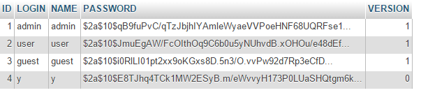
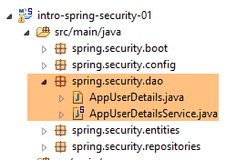
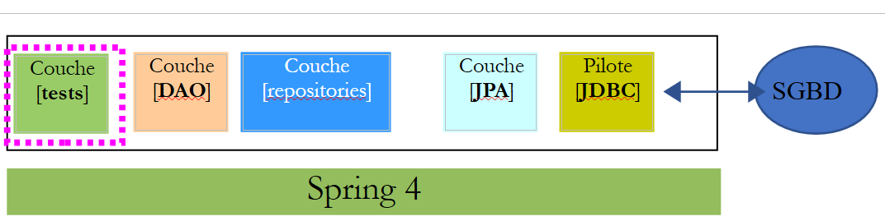
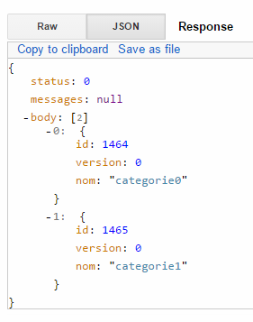
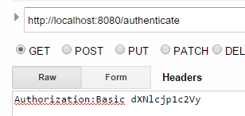

16. [Cours]: Proteger el acceso a un servicio web con Spring Security
Palabras clave: arquitectura multicapa, Spring, inyección de dependencias, servicio web / jSON seguro, cliente / servidor
16.1. Support
 |  |
Los proyectos de este capítulo se encuentran en la carpeta [support / chap-16]. El script SQL sirve para generar la base de datos necesaria para las pruebas.
16.2. El papel de Spring Security en una aplicación web
Situemos Spring Security en el contexto del desarrollo de una aplicación web. En la mayoría de los casos, esta se construirá sobre una arquitectura multicapa como la siguiente:
 |
- La capa [Spring Security] solo concede acceso a la capa [web] a los usuarios autorizados.
16.3. Un tutorial sobre Spring Security
Vamos a importar de nuevo una guía de Spring siguiendo los pasos 1 a 3 que se indican a continuación:
 |
 |
El proyecto se compone de los siguientes elementos:
- en la carpeta [templates] se encuentran las páginas HTML del proyecto;
- [Application]: es la clase ejecutable del proyecto;
- [MvcConfig]: es la clase de configuración de Spring MVC;
- [WebSecurityConfig]: es la clase de configuración de Spring Security;
16.3.1. Configuración de Maven
El proyecto [3] es un proyecto de Maven. Analicemos su archivo [pom.xml] para conocer sus dependencias:
<?xml version="1.0" encoding="UTF-8"?>
<project xmlns="http://maven.apache.org/POM/4.0.0" xmlns:xsi="http://www.w3.org/2001/XMLSchema-instance"
xsi:schemaLocation="http://maven.apache.org/POM/4.0.0 http://maven.apache.org/xsd/maven-4.0.0.xsd">
<modelVersion>4.0.0</modelVersion>
<groupId>org.springframework</groupId>
<artifactId>gs-securing-web</artifactId>
<version>0.1.0</version>
<parent>
<groupId>org.springframework.boot</groupId>
<artifactId>spring-boot-starter-parent</artifactId>
<version>1.2.3.RELEASE</version>
</parent>
<dependencies>
<dependency>
<groupId>org.springframework.boot</groupId>
<artifactId>spring-boot-starter-thymeleaf</artifactId>
</dependency>
<!-- etiqueta::security[] -->
<dependency>
<groupId>org.springframework.boot</groupId>
<artifactId>spring-boot-starter-security</artifactId>
</dependency>
<!-- fin::security[] -->
</dependencies>
<properties>
<start-class>hello.Application</start-class>
</properties>
<build>
<plugins>
<plugin>
<groupId>org.springframework.boot</groupId>
<artifactId>spring-boot-maven-plugin</artifactId>
</plugin>
</plugins>
</build>
</project>
- líneas 10-14: el proyecto es un proyecto de Spring Boot;
- líneas 17-20: dependencia del framework [Thymeleaf];
- líneas 22-25: dependencia del framework Spring Security;
16.3.2. Las vistas de Thymeleaf
 |
La vista [home.html] es la siguiente:
 |
<!DOCTYPE html>
<html xmlns="http://www.w3.org/1999/xhtml"
xmlns:th="http://www.thymeleaf.org"
xmlns:sec="http://www.thymeleaf.org/thymeleaf-extras-springsecurity3">
<head>
<title>Spring Security Example</title>
</head>
<body>
<h1>Welcome!</h1>
<p>
Click <a th:href="@{/hello}">here</a> to see a greeting.
</p>
</body>
</html>
- línea 12: el atributo [th:href="@{/hello}"] generará el atributo [href] de la etiqueta [<a>]. El valor [@{/hello}] generará la ruta [<context>/hello], donde [context] es el contexto de la aplicación web;
El código HTML generado es el siguiente:
<!DOCTYPE html>
<html xmlns="http://www.w3.org/1999/xhtml" xmlns:sec="http://www.thymeleaf.org/thymeleaf-extras-springsecurity3">
<head>
<title>Spring Security Example</title>
</head>
<body>
<h1>Welcome!</h1>
<p>
Click
<a href="/hello">here</a>
to see a greeting.
</p>
</body>
</html>
La vista [hello.html] es la siguiente:
 |
<!DOCTYPE html>
<html xmlns="http://www.w3.org/1999/xhtml"
xmlns:th="http://www.thymeleaf.org"
xmlns:sec="http://www.thymeleaf.org/thymeleaf-extras-springsecurity3">
<head>
<title>Hello World!</title>
</head>
<body>
<h1 th:inline="text">Hello [[${#httpServletRequest.remoteUser}]]!</h1>
<form th:action="@{/logout}" method="post">
<input type="submit" value="Sign Out" />
</form>
</body>
</html>
- línea 9: El atributo [th:inline="text"] generará el texto de la etiqueta [<h1>]. Este texto contiene una expresión $ que debe evaluarse. El elemento [[${#httpServletRequest.remoteUser}]] es el valor del atributo [RemoteUser] de la consulta HTTP actual. Es el nombre del usuario que ha iniciado sesión;
- línea 10: un formulario HTML. El atributo [th:action="@{/logout}"] generará el atributo [action] de la etiqueta [form]. El valor [@{/logout}] generará la ruta [<context>/logout], donde [context] es el contexto de la aplicación web;
El código HTML generado es el siguiente:
<!DOCTYPE html>
<html xmlns="http://www.w3.org/1999/xhtml" xmlns:sec="http://www.thymeleaf.org/thymeleaf-extras-springsecurity3">
<head>
<title>Hello World!</title>
</head>
<body>
<h1>Hello user!</h1>
<form method="post" action="/logout">
<input type="submit" value="Sign Out" />
<input type="hidden" name="_csrf" value="b152e5b9-d1a4-4492-b89d-b733fe521c91" />
</form>
</body>
</html>
- línea 8: la traducción de «Hello [[${#httpServletRequest.remoteUser}]]!»;
- línea 9: la traducción de @{/logout};
- línea 11: un campo oculto denominado (atributo name) _csrf;
La vista [login.html] es la siguiente:
 |
<!DOCTYPE html>
<html xmlns="http://www.w3.org/1999/xhtml"
xmlns:th="http://www.thymeleaf.org"
xmlns:sec="http://www.thymeleaf.org/thymeleaf-extras-springsecurity3">
<head>
<title>Spring Security Example</title>
</head>
<body>
<div th:if="${param.error}">Invalid username and password.</div>
<div th:if="${param.logout}">You have been logged out.</div>
<form th:action="@{/login}" method="post">
<div>
<label> User Name : <input type="text" name="username" />
</label>
</div>
<div>
<label> Password: <input type="password" name="password" />
</label>
</div>
<div>
<input type="submit" value="Sign In" />
</div>
</form>
</body>
</html>
- línea 9: el atributo [th:if="${param.error}"] hace que la etiqueta <div> solo se genere si el URL que muestra la página de inicio de sesión contiene el parámetro [error] (http://context/login?error);
- línea 10: el atributo [th:if="${param.logout}"] hace que la etiqueta <div> solo se genere si el URL, que muestra la página de inicio de sesión, contiene el parámetro [logout] (http://context/login?logout);
- líneas 11-23: un formulario HTML;
- línea 11: el formulario se enviará al URL [<context>/login], donde <context> es el contexto de la aplicación web;
- línea 13: un campo de entrada denominado [username];
- línea 17: un campo de entrada denominado [password];
El código HTML generado es el siguiente:
<!DOCTYPE html>
<html xmlns="http://www.w3.org/1999/xhtml" xmlns:sec="http://www.thymeleaf.org/thymeleaf-extras-springsecurity3">
<head>
<title>Spring Security Example </title>
</head>
<body>
<div>
You have been logged out.
</div>
<form method="post" action="/login">
<div>
<label>
User Name :
<input type="text" name="username" />
</label>
</div>
<div>
<label>
Password:
<input type="password" name="password" />
</label>
</div>
<div>
<input type="submit" value="Sign In" />
</div>
<input type="hidden" name="_csrf" value="ef809b0a-88b4-4db9-bc53-342216b77632" />
</form>
</body>
</html>
Cabe destacar que, en la línea 28, Thymeleaf ha añadido un campo oculto denominado [_csrf].
16.3.3. Configuración de Spring MVC
 |
La clase [MvcConfig] configura el marco Spring MVC:
package hello;
import org.springframework.context.annotation.Configuration;
import org.springframework.web.servlet.config.annotation.ViewControllerRegistry;
import org.springframework.web.servlet.config.annotation.WebMvcConfigurerAdapter;
@Configuration
public class MvcConfig extends WebMvcConfigurerAdapter {
@Override
public void addViewControllers(ViewControllerRegistry registry) {
registry.addViewController("/home").setViewName("home");
registry.addViewController("/").setViewName("home");
registry.addViewController("/hello").setViewName("hello");
registry.addViewController("/login").setViewName("login");
}
}
- línea 7: la anotación [@Configuration] convierte la clase [MvcConfig] en una clase de configuración;
- línea 8: la clase [MvcConfig] hereda de la clase [WebMvcConfigurerAdapter] para redefinir algunos de sus métodos;
- línea 10: redefinición de un método de la clase padre;
- líneas 11-16: el método [addViewControllers] permite asociar URL a vistas HTML. Se establecen las siguientes asociaciones:
vista | |
/templates/home.html | |
/templates/hello.html | |
/templates/login.html |
El sufijo [html] y la carpeta [templates] son los valores predeterminados que utiliza Thymeleaf. Se pueden modificar mediante la configuración. La carpeta [templates] debe estar en la raíz de la ruta de clases (Classpath) del proyecto:
 |
Por encima de [1], las carpetas [java] y [resources] son ambas carpetas de origen (source folders). Esto implica que su contenido se encontrará en la raíz del Classpath del proyecto. Por lo tanto, en [2], las carpetas [hello] y [templates] estarán en la raíz del Classpath.
16.3.4. Configuración de Spring Security
 |
La clase [WebSecurityConfig] configura el framework Spring Security:
package hello;
import org.springframework.context.annotation.Configuration;
import org.springframework.security.config.annotation.authentication.builders.AuthenticationManagerBuilder;
import org.springframework.security.config.annotation.web.builders.HttpSecurity;
import org.springframework.security.config.annotation.web.configuration.WebSecurityConfigurerAdapter;
import org.springframework.security.config.annotation.web.servlet.configuration.EnableWebMvcSecurity;
@Configuration
@EnableWebMvcSecurity
public class WebSecurityConfig extends WebSecurityConfigurerAdapter {
@Override
protected void configure(HttpSecurity http) throws Exception {
http.authorizeRequests().antMatchers("/", "/home").permitAll().anyRequest().authenticated();
http.formLogin().loginPage("/login").permitAll().and().logout().permitAll();
}
@Override
protected void configure(AuthenticationManagerBuilder auth) throws Exception {
auth.inMemoryAuthentication().withUser("user").password("password").roles("USER");
}
}
- línea 9: la anotación [@Configuration] convierte la clase [WebSecurityConfig] en una clase de configuración;
- línea 10: la anotación [@EnableWebSecurity] convierte la clase [WebSecurityConfig] en una clase de configuración de Spring Security;
- línea 11: la clase [WebSecurity] hereda de la clase [WebSecurityConfigurerAdapter] para redefinir algunos de sus métodos;
- línea 12: redefinición de un método de la clase padre;
- líneas 13-16: el método [configure(HttpSecurity http)] se redefine para establecer los derechos de acceso a los distintos URL de la aplicación;
- línea 14: el método [http.authorizeRequests()] permite asociar URL a derechos de acceso. En él se realizan las siguientes asociaciones:
regla | código | |
acceso sin autenticación | | |
Acceso solo con autenticación |
- línea 15: define el método de autenticación. La autenticación se realiza a través de un formulario de URL [/login] accesible para todos [http.formLogin().loginPage("/login").permitAll()]. El cierre de sesión (logout) también es accesible para todos;
- líneas 19-21: redefinen el método [configure(AuthenticationManagerBuilder auth)] que gestiona a los usuarios;
- línea 20: la autenticación se realiza con usuarios definidos de forma «fija» [auth.inMemoryAuthentication()]. Aquí se define un usuario con el nombre de usuario [user], la contraseña [password] y el rol [USER]. Se pueden conceder los mismos derechos a los usuarios que tengan el mismo rol;
16.3.5. Clase ejecutable
 |
La clase [Application] es la siguiente:
package hello;
import org.springframework.boot.autoconfigure.EnableAutoConfiguration;
import org.springframework.boot.SpringApplication;
import org.springframework.context.annotation.ComponentScan;
import org.springframework.context.annotation.Configuration;
@EnableAutoConfiguration
@Configuration
@ComponentScan
public class Application {
public static void main(String[] args) throws Throwable {
SpringApplication.run(Application.class, args);
}
}
- línea 8: la anotación [@EnableAutoConfiguration] solicita a Spring Boot (línea 3) que realice la configuración que el desarrollador no habrá realizado explícitamente;
- línea 9: convierte la clase [Application] en una clase de configuración de Spring;
- línea 10: solicita que se analice la carpeta de la clase [Application] para buscar componentes de Spring. De este modo, se detectarán las dos clases [MvcConfig] y [WebSecurityConfig], ya que cuentan con la anotación [@Configuration];
- línea 13: el método [main] de la clase ejecutable;
- línea 14: se ejecuta el método estático [SpringApplication.run] con la clase de configuración [Application] como parámetro. Ya nos hemos encontrado con este proceso y sabemos que se iniciará el servidor Tomcat integrado en las dependencias Maven del proyecto y que el proyecto se desplegará en él. Hemos visto que cuatro URL eran gestionadas por [/, /home, /login, /hello] y que algunas estaban protegidas por derechos de acceso.
16.3.6. Pruebas de la aplicación
Empecemos por solicitar el URL [/], que es uno de los cuatro URL aceptados. Está asociado a la vista [/templates/home.html]:
 |
La URL solicitada, [/], es de acceso público. Por eso la hemos obtenido. El enlace [here] es el siguiente:
El URL [/hello] se solicitará al hacer clic en el enlace. Este está protegido:
regla | código | |
acceso sin autenticación | | |
Solo acceso autenticado |
Es necesario estar autenticado para obtenerlo. Spring Security redirigirá entonces el navegador del cliente a la página de autenticación. Según la configuración que hemos visto, se trata de la página URL [/login]. Esta página es accesible para todos:
http.formLogin().loginPage("/login").permitAll().and().logout().permitAll();
Así pues, obtenemos [1]:
 |
El código fuente de la página obtenida es el siguiente:
- En la línea 7 aparece un campo oculto que no está en la página original [login.html]. Lo ha añadido Thymeleaf. Este código, denominado CSRF (Cross Site Request Forgery), tiene como objetivo eliminar una vulnerabilidad de seguridad. Este token debe enviarse de vuelta a Spring Security junto con la autenticación para que esta última sea aceptada;
Recordemos que Spring Security solo reconoce al usuario user/password. Si introducimos cualquier otro valor en [2], obtenemos la misma página con un mensaje de error en [3]. Spring Security ha redirigido el navegador a URL [http://localhost:8080/login?error]. La presencia del parámetro [error] ha activado la visualización de la etiqueta:
<div th:if="${param.error}">Invalid username and password.</div>
Ahora, introduzcamos los valores esperados «user/password» [4]:
 |
- en [4], nos identificamos;
- en [5], Spring Security nos redirige a URL [/hello], ya que es URL lo que solicitábamos cuando fuimos redirigidos a la página de inicio de sesión. La identidad del usuario se mostró en la siguiente línea de [hello.html]:
La página [5] muestra el siguiente formulario:
<form th:action="@{/logout}" method="post">
<input type="submit" value="Sign Out" />
</form>
Al hacer clic en el botón [Sign Out], se generará un POST en el URL [/logout]. Este, al igual que el URL y el [/login], es accesible para todos:
http.formLogin().loginPage("/login").permitAll().and().logout().permitAll();
En nuestra asociación URL / vistas, no hemos definido nada para URL ni [/logout]. ¿Qué va a pasar? Probemos:
 |
- en [6], hacemos clic en el botón [Sign Out];
- en [7], vemos que se nos ha redirigido a URL [http://localhost:8080/login?logout]. Ha sido Spring Security quien ha solicitado esta redirección. La presencia del parámetro [logout] en URL ha hecho que se muestre la siguiente línea en la vista:
<div th:if="${param.logout}">You have been logged out.</div>
16.3.7. Conclusión
En el ejemplo anterior, podríamos haber escrito primero la aplicación web y luego haberla protegido. Spring Security no es intrusivo. Se puede implementar la seguridad en una aplicación web ya escrita. Además, hemos descubierto lo siguiente:
- es posible definir una página de autenticación;
- la autenticación debe ir acompañada del token CSRF emitido por Spring Security;
- si la autenticación falla, se redirige al usuario a la página de autenticación, además con un parámetro «error» en el token URL;
- si la autenticación se realiza con éxito, se redirige al usuario a la página solicitada en el momento de la autenticación. Si se solicita directamente la página de autenticación sin pasar por una página intermedia, Spring Security nos redirige a URL [/] (este caso no se ha planteado);
- la desconexión se realiza solicitando la página URL [/logout] con un POST. Spring Security nos redirige entonces a la página de autenticación con el parámetro «logout» en el URL;
Todas estas conclusiones se basan en el comportamiento por defecto de Spring Security. Este comportamiento se puede modificar mediante la configuración, redefiniendo ciertos métodos de la clase [WebSecurityConfigurerAdapter].
El tutorial anterior nos será de poca ayuda a partir de ahora. De hecho, vamos a utilizar:
- una base de datos para almacenar los usuarios, sus contraseñas y sus roles;
- una autenticación mediante encabezado HTTP;
Hay muy pocos tutoriales sobre lo que queremos hacer aquí. La solución que se va a proponer es una recopilación de códigos encontrados aquí y allá.
16.4. Configuración de la seguridad en el servicio web / JSON de los productos
16.4.1. La base de datos
La base de datos [dbintrospringdata] se amplía para incluir a los usuarios, sus contraseñas y sus roles. Aparecen tres nuevas tablas:

Tabla [USERS]: los usuarios
- ID: clave primaria;
- VERSION: columna de control de versiones de la fila;
- IDENTITY: una identidad descriptiva del usuario;
- LOGIN: el nombre de usuario;
- PASSWORD: su contraseña;
En la tabla USERS, las contraseñas no se almacenan en texto claro:
 |
El algoritmo que cifra las contraseñas es el algoritmo BCRYPT.
Tabla [ROLES]: los roles
- ID: clave primaria;
- VERSION: columna de control de versiones de la fila;
- NAME: nombre del rol. Por defecto, Spring Security espera nombres con el formato ROLE_XX, por ejemplo, ROLE_ADMIN o ROLE_GUEST;
 |
Tabla [USERS_ROLES]: tabla de unión USERS / ROLES
Un usuario puede tener varios roles, y un rol puede agrupar a varios usuarios. Se trata de una relación «muchos a muchos» que se plasma en la tabla [USERS_ROLES].
- ID: clave primaria;
- VERSION: columna de control de versiones de la fila;
- USER_ID: identificador de un usuario;
- ROLE_ID: identificador de un rol;
 |
16.4.2. El proyecto Eclipse
Creamos el siguiente proyecto Eclipse:
1  |
- en [1]: el nuevo proyecto con los siguientes paquetes:
- [spring.security.entities]: contiene las entidades JPA correspondientes a las tres nuevas tablas de la base de datos;
- [spring.security.repositories]: contiene los [repositories] de Spring Data asociados a las tres nuevas tablas;
- [spring.security.dao]: contiene un servicio basado en los [repositories];
- [spring.security.config]: contiene la configuración del proyecto y, en particular, la de los accesos seguros al servicio web;
- [spring.security.boot]: contiene la clase de inicio del servicio web seguro;
16.4.3. La configuración de Maven
El nuevo proyecto es un proyecto Maven configurado mediante el siguiente archivo [pom.xml]:
<project xmlns="http://maven.apache.org/POM/4.0.0" xmlns:xsi="http://www.w3.org/2001/XMLSchema-instance"
xsi:schemaLocation="http://maven.apache.org/POM/4.0.0 http://maven.apache.org/xsd/maven-4.0.0.xsd">
<modelVersion>4.0.0</modelVersion>
<groupId>istia.st.spring.security</groupId>
<artifactId>intro-spring-security-server-01</artifactId>
<version>0.0.1-SNAPSHOT</version>
<name>intro-spring-security-server-01</name>
<description>démo spring security</description>
<properties>
<project.build.sourceEncoding>UTF-8</project.build.sourceEncoding>
<java.version>1.8</java.version>
</properties>
<parent>
<groupId>org.springframework.boot</groupId>
<artifactId>spring-boot-starter-parent</artifactId>
<version>1.2.7.RELEASE</version>
</parent>
<dependencies>
<dependency>
<groupId>istia.st.webjson</groupId>
<artifactId>intro-server-webjson-01</artifactId>
<version>0.0.1-SNAPSHOT</version>
</dependency>
<!-- Spring Security -->
<dependency>
<groupId>org.springframework.boot</groupId>
<artifactId>spring-boot-starter-security</artifactId>
</dependency>
<!-- Registros de Spring -->
<dependency>
<groupId>org.springframework.boot</groupId>
<artifactId>spring-boot-starter-logging</artifactId>
</dependency>
<!-- Spring Boot -->
<dependency>
<groupId>org.springframework.boot</groupId>
<artifactId>spring-boot</artifactId>
</dependency>
<!-- Pruebas de Spring Boot -->
<dependency>
<groupId>org.springframework.boot</groupId>
<artifactId>spring-boot-starter-test</artifactId>
<scope>test</scope>
</dependency>
</dependencies>
<!-- complementos -->
<build>
<plugins>
<plugin>
<artifactId>maven-assembly-plugin</artifactId>
<configuration>
<descriptorRefs>
<descriptorRef>jar-with-dependencies</descriptorRef>
</descriptorRefs>
</configuration>
</plugin>
<plugin>
<groupId>org.apache.maven.plugins</groupId>
<artifactId>maven-surefire-plugin</artifactId>
<version>2.18.1</version>
</plugin>
</plugins>
</build>
</project>
- líneas 23-27: se retoma lo existente con el archivo del servicio web /json analizado;
- líneas 29-32: la dependencia que incorpora las clases de Spring Security;
- líneas 34-37: la biblioteca de registros;
- líneas 39-42: la biblioteca que permite utilizar las anotaciones de Spring Boot;
- líneas 44-48: la biblioteca necesaria para las pruebas;
16.4.4. Las nuevas entidades [JPA]
 |
La capa JPA define tres nuevas entidades:
 |
La clase [User] es la imagen de la tabla [USERS]:
package spring.security.entities;
import javax.persistence.Column;
import javax.persistence.Entity;
import javax.persistence.Table;
import spring.data.entities.AbstractEntity;
@Entity
@Table(name = "USERS")
public class User extends AbstractEntity {
// Propiedades
@Column(name = "NAME")
private String name;
@Column(name = "LOGIN")
private String login;
@Column(name = "PASSWORD")
private String password;
// constructor
public User() {
}
public User(String name, String login, String password) {
this.name = name;
this.login = login;
this.password = password;
}
// getters y setters
...
}
- línea 11: la clase hereda de la clase [AbstractEntity], ya utilizada para las demás entidades;
La clase [Role] es la imagen de la tabla [ROLES]:
package spring.security.entities;
import javax.persistence.Column;
import javax.persistence.Entity;
import javax.persistence.Table;
import spring.data.entities.AbstractEntity;
@Entity
@Table(name = "ROLES")
public class Role extends AbstractEntity {
// propiedades
@Column(name="NAME")
private String name;
// constructores
public Role() {
}
public Role(String name) {
this.name = name;
}
// getters y setters
public String getName() {
return name;
}
public void setName(String name) {
this.name = name;
}
}
La clase [UserRole] es la imagen de la tabla [USERS_ROLES]:
package spring.security.entities;
import javax.persistence.Column;
import javax.persistence.Entity;
import javax.persistence.JoinColumn;
import javax.persistence.ManyToOne;
import javax.persistence.Table;
import spring.data.entities.AbstractEntity;
@Entity
@Table(name = "USERS_ROLES")
public class UserRole extends AbstractEntity {
// las claves externas
@Column(name = "USER_ID", insertable = false, updatable = false)
private Long userId;
@Column(name = "ROLE_ID", insertable = false, updatable = false)
private Long roleId;
// un UserRole hace referencia a un usuario
@ManyToOne
@JoinColumn(name = "USER_ID")
private User user;
// un UserRole hace referencia a un rol
@ManyToOne
@JoinColumn(name = "ROLE_ID")
private Role role;
// constructores
public UserRole() {
}
public UserRole(User user, Role role) {
this.user = user;
this.role = role;
}
// getters y setters
...
}
- líneas 22-24: definen la clave externa de la tabla [USERS_ROLES] hacia la tabla [USERS];
- líneas 27-29: representan la clave externa de la tabla [USERS_ROLES] hacia la tabla [ROLES];
16.4.5. Las [repositories]
 |
Cada una de las entidades JPA anteriores se gestiona mediante un [repository] de Spring Data:
 |
La interfaz [UserRepository] gestiona el acceso a las entidades [User]:
package spring.security.repositories;
import org.springframework.data.jpa.repository.Query;
import org.springframework.data.repository.CrudRepository;
import spring.security.entities.Role;
import spring.security.entities.User;
public interface UserRepository extends CrudRepository<User, Long> {
// lista de roles de un usuario identificado por su ID
@Query("select ur.role from UserRole ur where ur.user.id=?1")
Iterable<Role> getRoles(long id);
// lista de roles de un usuario identificado por su nombre de usuario único
@Query("select ur.role from UserRole ur where ur.user.login=?1 and ur.user.password=?2")
Iterable<Role> getRoles(String login, String password);
// búsqueda de un usuario por su nombre de usuario
User findUserByLogin(String login);
}
- línea 9: la interfaz [UserRepository] extiende la interfaz [CrudRepository] de Spring Data (línea 4);
- líneas 12-13: el método [getRoles(User user)] permite obtener todos los roles de un usuario identificado por su [id]
- líneas 16-17: lo mismo, pero para un usuario identificado mediante su nombre de usuario y contraseña;
- línea 20: para buscar un usuario mediante su nombre de usuario;
La interfaz [RoleRepository] gestiona los accesos a las entidades [Role]:
package spring.security.repositories;
import org.springframework.data.repository.CrudRepository;
import spring.security.entities.Role;
public interface RoleRepository extends CrudRepository<Role, Long> {
// búsqueda de un rol mediante su nombre
Role findRoleByName(String name);
}
- línea 7: la interfaz [RoleRepository] amplía la interfaz [CrudRepository];
- línea 10: se puede buscar un rol por su nombre;
La interfaz [UserRoleRepository] gestiona el acceso a las entidades [UserRole]:
package spring.security.repositories;
import org.springframework.data.repository.CrudRepository;
import spring.security.entities.UserRole;
public interface UserRoleRepository extends CrudRepository<UserRole, Long> {
}
- línea 5: la interfaz [UserRoleRepository] se limita a ampliar la interfaz [CrudRepository] sin añadirle nuevos métodos;
16.4.6. Las clases de gestión de usuarios y roles
 |
 |
Spring Security exige la creación de una clase que implemente la siguiente interfaz [UsersDetail]:
 |
Esta interfaz se implementa aquí mediante la clase [AppUserDetails]:
package spring.security.dao;
import java.util.ArrayList;
import java.util.Collection;
import org.springframework.security.core.GrantedAuthority;
import org.springframework.security.core.authority.SimpleGrantedAuthority;
import org.springframework.security.core.userdetails.UserDetails;
import spring.security.entities.Role;
import spring.security.entities.User;
import spring.security.repositories.UserRepository;
public class AppUserDetails implements UserDetails {
private static final long serialVersionUID = 1L;
// propiedades
private User user;
private UserRepository userRepository;
// constructores
public AppUserDetails() {
}
public AppUserDetails(User user, UserRepository userRepository) {
this.user = user;
this.userRepository = userRepository;
}
// -------------------------interfaz
@Override
public Collection<? extends GrantedAuthority> getAuthorities() {
Collection<GrantedAuthority> authorities = new ArrayList<>();
for (Role role : userRepository.getRoles(user.getId())) {
authorities.add(new SimpleGrantedAuthority(role.getName()));
}
return authorities;
}
@Override
public String getPassword() {
return user.getPassword();
}
@Override
public String getUsername() {
return user.getLogin();
}
@Override
public boolean isAccountNonExpired() {
return true;
}
@Override
public boolean isAccountNonLocked() {
return true;
}
@Override
public boolean isCredentialsNonExpired() {
return true;
}
@Override
public boolean isEnabled() {
return true;
}
// getters y setters
...
}
- línea 14: la clase [AppUserDetails] implementa la interfaz [UserDetails];
- líneas 19-20: la clase encapsula un usuario (línea 19) y el repositorio que permite obtener los detalles de dicho usuario (línea 20);
- líneas 26-29: el constructor que instancia la clase con un usuario y su repositorio;
- líneas 32-36: implementación del método [getAuthorities] de la interfaz [UserDetails]. Debe construir una colección de elementos de tipo [GrantedAuthority] o derivado. Aquí utilizamos el tipo derivado [SimpleGrantedAuthority] (línea 36), que encapsula el nombre de uno de los roles del usuario de la línea 19;
- líneas 35-37: se recorre la lista de roles del usuario de la línea 19 para crear una lista de elementos de tipo [SimpleGrantedAuthority];
- líneas 42-44: implementan el método [getPassword] de la interfaz [UserDetails]. Se devuelve la contraseña del usuario de la línea 19;
- líneas 42-44: implementan el método [getUserName] de la interfaz [UserDetails]. Se devuelve el nombre de usuario de la línea 19;
- líneas 51-54: la cuenta del usuario nunca caduca;
- líneas 56-59: la cuenta del usuario nunca se bloquea;
- líneas 61-64: las credenciales del usuario nunca caducan;
- líneas 66-69: la cuenta del usuario siempre está activa;
Spring Security también exige la existencia de una clase que implemente la interfaz [AppUserDetailsService]:
 |
Esta interfaz la implementa la siguiente clase [AppUserDetailsService]:
package spring.security.dao;
import org.springframework.beans.factory.annotation.Autowired;
import org.springframework.security.core.userdetails.UserDetails;
import org.springframework.security.core.userdetails.UserDetailsService;
import org.springframework.security.core.userdetails.UsernameNotFoundException;
import org.springframework.stereotype.Service;
import spring.security.entities.User;
import spring.security.repositories.UserRepository;
@Service
public class AppUserDetailsService implements UserDetailsService {
@Autowired
private UserRepository userRepository;
@Override
public UserDetails loadUserByUsername(String login) throws UsernameNotFoundException {
// ¿Se busca al usuario por su nombre de usuario?
User user = userRepository.findUserByLogin(login);
// ¿Encontrado?
if (user == null) {
throw new UsernameNotFoundException(String.format("login [%s] inexistant", login));
}
// se muestran los datos del usuario
return new AppUserDetails(user, userRepository);
}
}
- línea 12: la clase será un componente de Spring, por lo que estará disponible en su contexto;
- líneas 15-16: el componente [UserRepository] se inyectará aquí;
- líneas 19-28: implementación del método [loadUserByUsername] de la interfaz [UserDetailsService] (línea 10). El parámetro es el nombre de usuario;
- línea 21: se busca al usuario mediante su nombre de usuario;
- líneas 23-25: si no se encuentra, se lanza una excepción;
- línea 27: se crea y se devuelve un objeto [AppUserDetails]. Este es efectivamente de tipo [UserDetails] (línea 19);
16.4.7. La configuración del proyecto
 |
El proyecto está configurado por dos clases:
 |
La clase [DaoConfig] configura la capa [DAO] que aporta el nuevo proyecto:
package spring.security.config;
import org.springframework.context.annotation.Bean;
import org.springframework.context.annotation.ComponentScan;
import org.springframework.context.annotation.Import;
import org.springframework.data.jpa.repository.config.EnableJpaRepositories;
@EnableJpaRepositories(basePackages = { "spring.security.repositories" })
@ComponentScan(basePackages = { "spring.security.dao" })
@Import({ spring.data.config.DaoConfig.class })
public class DaoConfig {
// constantes
final static private String[] ENTITIES_PACKAGES = { "spring.data.entities", "spring.security.entities" };
@Bean
public String[] packagesToScan() {
return ENTITIES_PACKAGES;
}
}
- línea 10: se importa la clase de configuración [spring.data.config.DaoConfig] del proyecto [intro-spring-data-01], que implementa la capa [DAO] de productos y categorías;
- línea 8: se indican las carpetas del proyecto actual que contienen [repositories] Spring Data;
- línea 9: se indican las carpetas del proyecto actual que contienen componentes de Spring relacionados con la capa [DAO];
- línea 14: se indican las carpetas que contienen entidades JPA. Están las del proyecto [intro-spring-data-01] y las del proyecto del servidor seguro. Esta información es objeto del bean de las líneas 16-19. Este bean redefine el bean del mismo nombre del proyecto [intro-spring-data-01]:
final static private String[] ENTITIES_PACKAGES = { "spring.data.entities" };
// EntityManagerFactory
@Bean
public EntityManagerFactory entityManagerFactory(JpaVendorAdapter jpaVendorAdapter, DataSource dataSource) {
LocalContainerEntityManagerFactoryBean factory = new LocalContainerEntityManagerFactoryBean();
factory.setJpaVendorAdapter(jpaVendorAdapter);
factory.setPackagesToScan(packagesToScan());
factory.setDataSource(dataSource);
factory.afterPropertiesSet();
return factory.getObject();
}
@Bean
public String[] packagesToScan() {
return ENTITIES_PACKAGES;
}
En la capa [DAO], la línea 8 escanea las carpetas indicadas en la línea 1. Debido a la redefinición del bean de las líneas 14-17 en el proyecto seguro (líneas 16-19), la línea 8 anterior escaneará a partir de ahora las carpetas ["spring.data.entities", "spring.security.entities"]. Cabe señalar que la clase importada en la línea 10 de la clase [spring.security.config.DaoConfig] debe incluir la anotación [@Configuration]; de lo contrario, el fenómeno que acabamos de explicar no funcionará.
La clase [SecurityConfig] configura el aspecto de seguridad del proyecto. Ya nos hemos encontrado con una clase de configuración de Spring Security:
package hello;
import org.springframework.context.annotation.Configuration;
import org.springframework.security.config.annotation.authentication.builders.AuthenticationManagerBuilder;
import org.springframework.security.config.annotation.web.builders.HttpSecurity;
import org.springframework.security.config.annotation.web.configuration.WebSecurityConfigurerAdapter;
import org.springframework.security.config.annotation.web.servlet.configuration.EnableWebMvcSecurity;
@Configuration
@EnableWebMvcSecurity
public class WebSecurityConfig extends WebSecurityConfigurerAdapter {
@Override
protected void configure(HttpSecurity http) throws Exception {
http.authorizeRequests().antMatchers("/", "/home").permitAll().anyRequest().authenticated();
http.formLogin().loginPage("/login").permitAll().and().logout().permitAll();
}
@Override
protected void configure(AuthenticationManagerBuilder auth) throws Exception {
auth.inMemoryAuthentication().withUser("user").password("password").roles("USER");
}
}
Vamos a seguir el mismo procedimiento:
- línea 11: definir una clase que extienda la clase [WebSecurityConfigurerAdapter];
- línea 13: definir un método [configure(HttpSecurity http)] que establezca los derechos de acceso a los distintos URL del servicio web;
- línea 19: definir un método [configure(AuthenticationManagerBuilder auth)] que defina los usuarios y sus roles;
La clase [SecurityConfig] será la siguiente:
package spring.security.config;
import org.springframework.beans.factory.annotation.Autowired;
import org.springframework.context.annotation.ComponentScan;
import org.springframework.context.annotation.Import;
import org.springframework.http.HttpMethod;
import org.springframework.security.config.annotation.authentication.builders.AuthenticationManagerBuilder;
import org.springframework.security.config.annotation.web.builders.HttpSecurity;
import org.springframework.security.config.annotation.web.configuration.EnableWebSecurity;
import org.springframework.security.config.annotation.web.configuration.WebSecurityConfigurerAdapter;
import org.springframework.security.config.http.SessionCreationPolicy;
import org.springframework.security.crypto.bcrypt.BCryptPasswordEncoder;
import spring.security.dao.AppUserDetailsService;
@EnableWebSecurity
@ComponentScan(basePackages = { "spring.security.service" })
@Import({ spring.webjson.config.AppConfig.class, DaoConfig.class })
public class SecurityConfig extends WebSecurityConfigurerAdapter {
@Autowired
private AppUserDetailsService appUserDetailsService;
// protección
private boolean activateSecurity = true;
@Override
protected void configure(AuthenticationManagerBuilder registry) throws Exception {
// la autenticación la realiza el bean [appUserDetailsService]
// la contraseña se cifra mediante el algoritmo de hash BCrypt
registry.userDetailsService(appUserDetailsService).passwordEncoder(new BCryptPasswordEncoder());
}
@Override
protected void configure(HttpSecurity http) throws Exception {
// CSRF
http.csrf().disable();
// ¿Aplicación segura?
if (activateSecurity) {
// la contraseña se transmite a través del encabezado «Authorization: Basic xxxx»
http.httpBasic();
// El método HTTP OPTIONS debe estar autorizado para todos
http.authorizeRequests() //
.antMatchers(HttpMethod.OPTIONS, "/", "/**").permitAll();
// solo el rol ADMIN puede utilizar la aplicación
http.authorizeRequests() //
.antMatchers("/", "/**") // todas las URL
.hasRole("ADMIN");
// sin sesión
http.sessionManagement().sessionCreationPolicy(SessionCreationPolicy.STATELESS);
}
}
}
- línea 16: para activar los elementos de Spring Security;
- línea 17: se añaden los componentes de Spring del paquete [spring.security.service];
- línea 18: se importan los beans de la capa [DAO] que acabamos de presentar, así como los del servidor web / jSON no seguro;
- líneas 21-22: se inyecta la clase [AppUserDetails], que da acceso a los usuarios de la aplicación;
- línea 25: un valor booleano que protege (true) o no (false) la aplicación web;
- líneas 27-32: el método [configure(HttpSecurity http)] define a los usuarios y sus roles. Recibe como parámetro un tipo [AuthenticationManagerBuilder]. Este parámetro se complementa con dos datos (línea 38):
- una referencia al servicio [appUserDetailsService] de la línea 22, que da acceso a los usuarios registrados. Cabe señalar aquí que no se indica que estén registrados en una base de datos. Por lo tanto, podrían estar en una caché, proporcionados por un servicio web, etc.
- el tipo de cifrado utilizado para la contraseña. Recordemos que hemos utilizado el algoritmo BCrypt;
- líneas 34-52: el método [configure(HttpSecurity http)] define los derechos de acceso a los URL del servicio web;
- línea 37: en el proyecto de introducción vimos que, por defecto, Spring Security gestionaba un token CSRF (Cross Site Request Forgery) que el usuario que quisiera autenticarse debía enviar de vuelta al servidor. Aquí se desactiva este mecanismo. Esto, junto con el valor booleano (isSecured=false), permite utilizar la aplicación web sin seguridad;
- línea 41: se activa el modo de autenticación mediante el encabezado HTTP. El cliente deberá enviar el siguiente encabezado HTTP:
donde «code» es la codificación de la cadena «login:password» mediante el algoritmo Base64. Por ejemplo, la codificación Base64 de la cadena admin:admin es YWRtaW46YWRtaW4=. Por lo tanto, el usuario con nombre de usuario [admin] y contraseña [admin] enviará el siguiente encabezado HTTP para autenticarse:
- líneas 46-48: indican que todos los URL del servicio web son accesibles para los usuarios que tengan el rol [ROLE_ADMIN]. Esto significa que un usuario que no tenga este rol no puede acceder al servicio web;
- línea 50: en el modo [session], un usuario que se haya autenticado una vez no necesita volver a hacerlo en sus siguientes accesos. Aquí se desactiva este modo, por lo que el usuario deberá autenticarse en cada acceso;
16.4.8. Pruebas de la capa [DAO]
 |
 |
En primer lugar, creamos una clase ejecutable [CreateUser] capaz de crear un usuario con un rol:
package sprin.security.tests;
import org.springframework.context.annotation.AnnotationConfigApplicationContext;
import org.springframework.security.crypto.bcrypt.BCrypt;
import spring.security.config.DaoConfig;
import spring.security.entities.Role;
import spring.security.entities.User;
import spring.security.entities.UserRole;
import spring.security.repositories.RoleRepository;
import spring.security.repositories.UserRepository;
import spring.security.repositories.UserRoleRepository;
public class CreateUser {
public static void main(String[] args) {
// sintaxis: nombre de usuario contraseña roleName
// se necesitan tres parámetros
if (args.length != 3) {
System.out.println("Syntaxe : [pg] user password role");
System.exit(0);
}
// se recuperan los parámetros
String login = args[0];
String password = args[1];
String roleName = String.format("ROLE_%s", args[2].toUpperCase());
// contexto Spring
AnnotationConfigApplicationContext context = new AnnotationConfigApplicationContext(DaoConfig.class);
UserRepository userRepository = context.getBean(UserRepository.class);
RoleRepository roleRepository = context.getBean(RoleRepository.class);
UserRoleRepository userRoleRepository = context.getBean(UserRoleRepository.class);
// ¿Existe ya el rol?
Role role = roleRepository.findRoleByName(roleName);
// si no existe, se crea
if (role == null) {
role = roleRepository.save(new Role(roleName));
}
// ¿Existe ya el usuario?
User user = userRepository.findUserByLogin(login);
// Si no existe, lo creamos
if (user == null) {
// Se aplica el hash a la contraseña con bcrypt
String crypt = BCrypt.hashpw(password, BCrypt.gensalt());
// se guarda el usuario
user = userRepository.save(new User(login, login, crypt));
// se crea la relación con el rol
userRoleRepository.save(new UserRole(user, role));
} else {
// el usuario ya existe: ¿tiene el rol solicitado?
boolean trouvé = false;
for (Role r : userRepository.getRoles(user.getId())) {
if (r.getName().equals(roleName)) {
trouvé = true;
break;
}
}
// si no se encuentra, se crea la relación con el rol
if (!trouvé) {
userRoleRepository.save(new UserRole(user, role));
}
}
// cierre del contexto de Spring
context.close();
// fin
System.out.println("Travail terminé...");
}
}
- línea 17: la clase espera tres argumentos que definen a un usuario: su nombre de usuario, su contraseña y su rol;
- líneas 25-27: se recuperan los tres parámetros;
- línea 29: se crea el contexto de Spring a partir de la clase de configuración [AppConfig];
- líneas 30-32: se recuperan las referencias de los tres [Repository] que pueden resultarnos útiles para crear el usuario;
- línea 34: se comprueba si el rol ya existe;
- líneas 36-38: si no es así, se crea en la base de datos. Tendrá un nombre del tipo [ROLE_XX];
- línea 40: se comprueba si el nombre de usuario ya existe;
- líneas 42-49: si el nombre de usuario no existe, lo creamos en la base de datos;
- línea 44: se cifra la contraseña. Aquí se utiliza la clase [BCrypt] de Spring Security (línea 4). Por lo tanto, se necesitan los archivos de este framework. El archivo [pom.xml] incluye esta dependencia:
<dependency>
<groupId>org.springframework.boot</groupId>
<artifactId>spring-boot-starter-security</artifactId>
</dependency>
- línea 46: el usuario se almacena en la base de datos;
- línea 48: así como la relación que lo vincula a su rol;
- líneas 51-57: en caso de que el usuario ya exista, se comprueba si entre sus roles se encuentra ya el rol que se le quiere asignar;
- líneas 59-61: si no se ha encontrado el rol buscado, se crea una entrada en la tabla [USERS_ROLES] para vincular al usuario con su rol;
- no se ha previsto ninguna protección contra posibles excepciones. Se trata de una clase de apoyo para crear rápidamente un usuario con un rol.
Al ejecutar la clase con los argumentos [x x guest], se obtienen en la base de datos los siguientes resultados:
Tabla [USERS]
 Tabla |
Tabla [ROLES]
 |
Tabla [USERS_ROLES]
 |
Veamos ahora la segunda clase [UsersTest], que es una prueba de JUnit:
|
package spring.security.tests;
import java.util.List;
import org.junit.Assert;
import org.junit.Test;
import org.junit.runner.RunWith;
import org.springframework.beans.factory.annotation.Autowired;
import org.springframework.boot.test.SpringApplicationConfiguration;
import org.springframework.security.core.authority.SimpleGrantedAuthority;
import org.springframework.security.crypto.bcrypt.BCrypt;
import org.springframework.test.context.junit4.SpringJUnit4ClassRunner;
import com.fasterxml.jackson.core.JsonProcessingException;
import com.fasterxml.jackson.databind.ObjectMapper;
import com.google.common.collect.Lists;
import spring.security.config.DaoConfig;
import spring.security.dao.AppUserDetails;
import spring.security.dao.AppUserDetailsService;
import spring.security.entities.Role;
import spring.security.entities.User;
import spring.security.repositories.UserRepository;
@SpringApplicationConfiguration(classes = DaoConfig.class)
@RunWith(SpringJUnit4ClassRunner.class)
public class UsersTest {
@Autowired
private UserRepository userRepository;
@Autowired
private AppUserDetailsService appUserDetailsService;
// mapeador jSON
private ObjectMapper mapper = new ObjectMapper();
@Test
public void findAllUsersWithTheirRoles() throws JsonProcessingException {
Iterable<User> users = userRepository.findAll();
for (User user : users) {
System.out.println(String.format("\n----------Utilisateur [%s]",mapper.writeValueAsString(user)));
display("Roles :", userRepository.getRoles(user.getId()));
}
}
@Test
public void findUserByLogin() {
// se recupera el usuario [admin]
User user = userRepository.findUserByLogin("admin");
// se comprueba que su contraseña sea [admin]
Assert.assertTrue(BCrypt.checkpw("admin", user.getPassword()));
// se comprueba el rol de admin / admin
List<Role> roles = Lists.newArrayList(userRepository.getRoles("admin", user.getPassword()));
Assert.assertEquals(1L, roles.size());
Assert.assertEquals("ROLE_ADMIN", roles.get(0).getName());
}
@Test
public void loadUserByUsername() {
// se recupera el usuario [admin]
AppUserDetails userDetails = (AppUserDetails) appUserDetailsService.loadUserByUsername("admin");
//: se comprueba que su contraseña es [admin]
Assert.assertTrue(BCrypt.checkpw("admin", userDetails.getPassword()));
// se comprueba el rol de admin / admin
@SuppressWarnings("unchecked")
List<SimpleGrantedAuthority> authorities = (List<SimpleGrantedAuthority>) userDetails.getAuthorities();
Assert.assertEquals(1L, authorities.size());
Assert.assertEquals("ROLE_ADMIN", authorities.get(0).getAuthority());
}
// método de utilidad: muestra los elementos de una colección
private void display(String message, Iterable<?> elements) throws JsonProcessingException {
System.out.println(message);
for (Object element : elements) {
System.out.println(mapper.writeValueAsString(element));
}
}
}
- líneas 37-44: prueba visual. Se muestran todos los usuarios con sus roles;
- líneas 46-56: se comprueba que el usuario [admin] tiene la contraseña [admin] y el rol [ROLE_ADMIN] utilizando el repositorio [UserRepository];
- línea 51: [admin] es la contraseña en texto claro. En la base de datos, está cifrada según el algoritmo BCrypt. El método [BCrypt.checkpw] permite comprobar que la contraseña en texto claro, una vez cifrada, coincide efectivamente con la que figura en la base de datos;
- líneas 58-69: se comprueba que el usuario [admin] tiene la contraseña [admin] y el rol [ROLE_ADMIN] utilizando el servicio [appUserDetailsService];
La ejecución de las pruebas se completa con éxito con los siguientes registros:
16.4.9. Pruebas del servicio web
Vamos a probar el servicio web con el cliente Chrome [Advanced Rest Client]. Tendremos que especificar el encabezado de autenticación HTTP:
donde [code] es el código Base64 de la cadena [login:password]. Para generar este código, se puede utilizar el siguiente programa:
 |
package spring.security.helpers;
import org.springframework.security.crypto.codec.Base64;
public class Base64Encoder {
public static void main(String[] args) {
// se esperan dos argumentos: nombre de usuario y contraseña
if (args.length != 2) {
System.out.println("Syntaxe : login password");
System.exit(0);
}
// se recuperan los dos argumentos
String chaîne = String.format("%s:%s", args[0], args[1]);
// se codifica la cadena
byte[] data = Base64.encode(chaîne.getBytes());
// muestra su codificación Base64
System.out.println(new String(data));
}
}
Si ejecutamos este programa con los dos argumentos [admin admin]:
 |
obtenemos el siguiente resultado:
Ahora que sabemos cómo generar el encabezado de autenticación HTTP, iniciamos el servicio web seguro y, a continuación, con el cliente Chrome [Advanced Rest Client], solicitamos la lista de todos los productos:
 |
- en [1], solicitamos el URL de las categorías;
- en [2], con un método GET;
- en [3], proporcionamos el encabezado HTTP de la autenticación. El código [YWRtaW46YWRtaW4=] es la codificación Base64 de la cadena [admin:admin];
- en [4], enviamos el comando HTTP;
La respuesta del servidor es la siguiente:
 |
- en [1], el encabezado de autenticación HTTP;
- en [2], el servidor devuelve una respuesta jSON;
Se obtiene correctamente la lista de categorías:
 |
Probemos ahora una solicitud HTTP con un encabezado de autenticación incorrecto. La respuesta es entonces la siguiente:
 |
- en [1]: el encabezado de autenticación HTTP;
Obtenemos la siguiente respuesta:
 |
- en [2]: la respuesta del servicio web;
Ahora probemos con el usuario «user» / «user». Existe, pero no tiene acceso al servicio web. Si ejecutamos el programa de codificación Base64 con los dos argumentos [user user]:
 |
obtenemos el siguiente resultado:
 |
- en [1]: el encabezado de autenticación HTTP es incorrecto;
 |
- en [2]: la respuesta del servicio web. Es diferente de la anterior, que era [401 Unauthorized]. En esta ocasión, el usuario se ha autenticado correctamente, pero no tiene los permisos suficientes para acceder a URL;
Nuestro servicio web seguro ya está operativo.
16.4.10. Un URL de autenticación
 |
Vamos a crear un URL que nos permitirá saber si un usuario está autorizado o no para acceder al servicio web. Para ello, creamos el nuevo controlador MVC [AuthenticateController] siguiente:
package spring.security.service;
import org.springframework.beans.factory.annotation.Autowired;
import org.springframework.context.ApplicationContext;
import org.springframework.stereotype.Controller;
import org.springframework.web.bind.annotation.RequestMapping;
import org.springframework.web.bind.annotation.RequestMethod;
import org.springframework.web.bind.annotation.ResponseBody;
import com.fasterxml.jackson.core.JsonProcessingException;
import com.fasterxml.jackson.databind.ObjectMapper;
import spring.webjson.models.Response;
@Controller
public class AuthenticateController {
// dependencias de Spring
@Autowired
private ApplicationContext context;
@RequestMapping(value = "/authenticate", method = RequestMethod.GET, produces = "application/json; charset=UTF-8")
@ResponseBody
public String authenticate() throws JsonProcessingException {
// respuesta jSON
ObjectMapper mapperResponse = context.getBean(ObjectMapper.class);
return mapperResponse.writeValueAsString(new Response<Void>(0, null, null));
}
}
- línea 15: la clase [AuthenticateController] es un controlador de Spring. Como tal, expone URL;
- línea 22: expone el URL [/authenticate];
- línea 23: el resultado del método se enviará directamente al cliente;
- líneas 26-27: el método se limita a devolver un objeto [Response] vacío, pero con un [status] igual a 0, lo que indica que no se ha producido ningún error;
¿Para qué sirve este URL? Cuando queramos simplemente autenticar a un usuario, lo solicitaremos. Hemos visto que, si la capa de seguridad no acepta a ese usuario, devuelve una excepción. He aquí un ejemplo;
Con el usuario [admin:admin]:
 |  |
Recibimos una respuesta vacía, pero no se produce ninguna excepción.
Con el usuario [user:user]:
 |  |
Se ha producido una excepción.
16.4.11. Conclusión
Se han podido añadir las clases necesarias para Spring Security sin necesidad de modificar el proyecto web/json original. Este caso tan favorable se debe a que las tres tablas añadidas a la base de datos son independientes de las tablas existentes. Incluso se podrían haber almacenado en una base de datos independiente. En otros casos, las tablas añadidas pueden tener relaciones con las tablas existentes. En ese caso, es necesario modificar las entidades JPA, lo que, por lo general, afecta a todas las capas del proyecto.
16.5. Un cliente programado para el servicio web / jSON seguro
Ya hemos escrito un cliente para el servicio web / jSON no seguro:
 |
Ahora vamos a crear un cliente programado para el servicio web seguro:
 |
Duplicamos el proyecto ya escrito [intro-webjson-client] en un nuevo proyecto [intro-spring-security-client-01]:
 |
16.5.1. La clase [AbstractDao]
La clase [AbstractDao] se encarga de la comunicación HTTP con el servidor web / jSON seguro. Como acabamos de ver, en esta comunicación HTTP, el cliente debe enviar ahora un encabezado de autenticación, por ejemplo:
Esto se hace de la siguiente manera:
package spring.security.client.dao;
import java.net.URI;
...
public abstract class AbstractDao {
// datos
@Autowired
protected RestTemplate restTemplate;
@Autowired
protected String urlServiceWebJson;
// solicitud genérica
protected String getResponse(User user, String url, String jsonPost) {
// URL: URL (para contactar)
- línea 15: el método genérico [getResponse], encargado de la comunicación HTTP con el servicio web seguro, admite ahora como primer parámetro al usuario que solicita un URL. La clase [User] es la siguiente:
Esta clase es la siguiente:
 |
package spring.security.client.entities;
public class User {
// características
private String login;
private String password;
// constructor
public User() {
}
public User(String login, String password) {
this.login = login;
this.password = password;
}
// getters y setters
...
}
El método [getResponse] queda entonces así:
package spring.security.client.dao;
import java.net.URI;
import java.net.URISyntaxException;
import java.util.Base64;
import org.springframework.beans.factory.annotation.Autowired;
import org.springframework.core.ParameterizedTypeReference;
import org.springframework.http.MediaType;
import org.springframework.http.RequestEntity;
import org.springframework.http.RequestEntity.BodyBuilder;
import org.springframework.http.RequestEntity.HeadersBuilder;
import org.springframework.web.client.RestTemplate;
import spring.security.client.entities.User;
public abstract class AbstractDao {
// datos
@Autowired
protected RestTemplate restTemplate;
@Autowired
protected String urlServiceWebJson;
private String getBase64(User user) {
// se codifican en base 64 el usuario y su contraseña; requiere Java 8
String chaîne = String.format("%s:%s", user.getLogin(), user.getPassword());
return String.format("Basic %s", new String(Base64.getEncoder().encode(chaîne.getBytes())));
}
// solicitud genérica
protected String getResponse(User user, String url, String jsonPost) {
// URL: URL (ponerse en contacto)
// jsonPost: hay que enviar el valor jSON
try {
// ejecución de la solicitud
RequestEntity<?> request;
if (jsonPost == null) {
HeadersBuilder<?> headersBuilder = RequestEntity.get(new URI(String.format("%s%s", urlServiceWebJson, url)))
.accept(MediaType.APPLICATION_JSON);
if (user != null) {
headersBuilder = headersBuilder.header("Authorization", getBase64(user));
}
request = headersBuilder.build();
} else {
BodyBuilder bodyBuilder = RequestEntity.post(new URI(String.format("%s%s", urlServiceWebJson, url)))
.header("Content-Type", "application/json").accept(MediaType.APPLICATION_JSON);
if (user != null) {
bodyBuilder = bodyBuilder.header("Authorization", getBase64(user));
}
request = bodyBuilder.body(jsonPost);
}
// se ejecuta la consulta
return restTemplate.exchange(request, new ParameterizedTypeReference<String>() {
}).getBody();
} catch (URISyntaxException e1) {
throw new DaoException(20, e1);
} catch (RuntimeException e2) {
throw new DaoException(21, e2);
}
}
}
- líneas 42-44, 49-51: si el usuario [user] no es nulo, se añade el encabezado de autenticación. La codificación Base64 del usuario y su contraseña se realiza mediante el método [getBase64] de las líneas 25-29. Hay que tener en cuenta que este método utiliza una clase [Base64] que pertenece a JDK 1.8.
- Aparte de las líneas anteriores, el código permanece sin cambios;
16.5.2. La interfaz [IDao]
Todos los métodos de la interfaz [IDao] reciben un parámetro adicional [User user]:
 |
package spring.security.client.dao;
import java.util.List;
import spring.security.client.entities.Categorie;
import spring.security.client.entities.Produit;
import spring.security.client.entities.User;
public interface IDaoClient {
// autenticación
public void authenticate(User user);
//: inserción de una lista de productos
public List<Produit> addProduits(User user, List<Produit> produits);
// eliminación de todos los productos
public void deleteAllProduits(User user);
// Actualización de una lista de productos
public List<Produit> updateProduits(User user, List<Produit> produits);
// obtención de todos los productos
public List<Produit> getAllProduits(User user);
// Inserción de una lista de categorías
public List<Categorie> addCategories(User user, List<Categorie> categories);
// eliminación de todas las categorías
public void deleteAllCategories(User user);
// Actualización de una lista de categorías
public List<Categorie> updateCategories(User user, List<Categorie> categories);
// obtención de todas las categorías
public List<Categorie> getAllCategories(User user);
// un producto concreto
public Produit getProduitByIdWithCategorie(User user, Long idProduit);
public Produit getProduitByIdWithoutCategorie(User user, Long idProduit);
public Produit getProduitByNameWithCategorie(User user, String nom);
public Produit getProduitByNameWithoutCategorie(User user, String nom);
// una categoría concreta
public Categorie getCategorieByIdWithProduits(User user, Long idCategorie);
public Categorie getCategorieByIdWithoutProduits(User user, Long idCategorie);
public Categorie getCategorieByNameWithProduits(User user, String nom);
public Categorie getCategorieByNameWithoutProduits(User user, String nom);
}
- línea 12: hemos añadido el método [authenticate(User user)] para autenticar a un usuario. Este método lanza una excepción si el usuario no tiene permiso para acceder a URL [/authenticate] del servicio web;
16.5.3. La clase [Dao]
Todos los métodos de la clase [Dao] reciben un parámetro adicional, [User user], que pasan al método genérico [getResponse] de la clase [AbstractDao]. A continuación se muestran dos ejemplos:
// autenticación
@Override
public void authenticate(User user) {
getResponse(user, "/authenticate", null);
}
@Override
public List<Produit> addProduits(User user, List<Produit> produits) {
// ----------- añadir productos (sin su categoría)
try {
// mapeadores jSON
ObjectMapper mapperPost = context.getBean(ObjectMapper.class);
mapperPost.setFilters(jsonFilterProduitWithoutCategorie);
ObjectMapper mapperResponse = mapperPost;
// solicitud
Response<List<Produit>> response = mapperResponse.readValue(
getResponse(user, "/addProduits", mapperPost.writeValueAsString(produits)),
new TypeReference<Response<List<Produit>>>() {
});
// ¿Error?
if (response.getStatus() != 0) {
// se lanza 1 excepción
throw new DaoException(response.getStatus(), response.getMessages());
} else {
// se devuelve el cuerpo de la respuesta del servidor
return response.getBody();
}
} catch (DaoException e1) {
throw e1;
} catch (IOException | RuntimeException e2) {
throw new DaoException(100, e2);
}
}
16.5.4. Pruebas unitarias de la clase [Dao]
La clase [Test01] de pruebas unitarias de la clase [Dao] se modifica de la siguiente manera:
 |
package client.tests.junit;
...
@SpringApplicationConfiguration(classes = DaoConfig.class)
@RunWith(SpringJUnit4ClassRunner.class)
public class Test01 {
// contexto de Spring
@Autowired
private ApplicationContext context;
// capa [DAO]
@Autowired
private IDaoClient dao;
// usuarios
static private User admin;
static private User user;
static private User unknown;
@BeforeClass
public static void init() {
admin = new User("admin", "admin");
user = new User("user", "user");
unknown = new User("x", "y");
}
@Before
public void cleanAndFill() {
// se limpia la base de datos antes de cada prueba
log("Vidage de la base de données", 1);
// se vacía la tabla [CATEGORIES]; de forma en cascada, se vaciará la tabla [PRODUITS]
dao.deleteAllCategories(admin);
// --------------------------------------------------------------------------------------
log("Remplissage de la base", 1);
// se rellenan las tablas
List<Categorie> categories = new ArrayList<Categorie>();
for (int i = 0; i < 2; i++) {
Categorie categorie = new Categorie(String.format("categorie%d", i));
for (int j = 0; j < 5; j++) {
categorie.addProduit(new Produit(String.format("produit%d%d", i, j), 100 * (1 + (double) (i * 10 + j) / 100),
String.format("desc%d%d", i, j)));
}
categories.add(categorie);
}
// se añade la categoría; de forma cascada, también se insertarán los productos
dao.addCategories(admin, categories);
}
@Test
public void showDataBase() throws BeansException, JsonProcessingException {
// lista de categorías
log("Liste des catégories", 2);
List<Categorie> categories = dao.getAllCategories(admin);
affiche(categories, context.getBean("jsonMapperCategorieWithoutProduits", ObjectMapper.class));
// lista de productos
log("Liste des produits", 2);
List<Produit> produits = dao.getAllProduits(admin);
affiche(produits, context.getBean("jsonMapperProduitWithoutCategorie", ObjectMapper.class));
// algunas comprobaciones
Assert.assertEquals(2, categories.size());
Assert.assertEquals(10, produits.size());
Categorie categorie = findCategorieByName("categorie0", categories);
Assert.assertNotNull(categorie);
Produit produit = findProduitByName("produit03", produits);
Assert.assertNotNull(produit);
Long idCategorie = produit.getIdCategorie();
Assert.assertEquals(categorie.getId(), idCategorie);
}
...
@Test()
public void checkUserUser() {
ServiceException se = null;
try {
dao.authenticate(user);
} catch (ServiceException e) {
se = e;
}
Assert.assertNotNull(se);
Assert.assertEquals("403 Forbidden", se.getMessages().get(0));
}
@Test()
public void checkUserUnknown() {
ServiceException se = null;
try {
dao.authenticate(unknown);
} catch (ServiceException e) {
se = e;
}
Assert.assertNotNull(se);
Assert.assertEquals("401 Unauthorized", se.getMessages().get(0));
}
@Test()
public void checkUserAdmin() {
ServiceException se = null;
try {
dao.authenticate(admin);
} catch (ServiceException e) {
se = e;
}
Assert.assertNull(se);
}
...
}
- Durante la inicialización de la clase de prueba, en las líneas 21-26, se crean tres usuarios:
- el usuario [admin] tiene acceso a URL del servicio web, prueba líneas 96-104;
- el usuario [user] existe, pero no está autorizado a utilizar los URL del servicio web, prueba líneas 71-81;
- el usuario [unknown] no existe, prueba en las líneas 83-93;
- los métodos de prueba son los mismos que los ya vistos para el servicio web no seguro, salvo que los métodos de la interfaz [IDaoClient] se invocan con el usuario [admin] como primer parámetro, el cual tiene permiso para utilizar los URL;
La prueba se supera, pero se observa que es más lenta que con el servicio web no seguro. La securización de una aplicación aumenta notablemente sus tiempos de respuesta. Cabe destacar un factor importante en el rendimiento del servicio web seguro: en la clase [AppConfig] que lo configura, hemos escrito:
@Override
protected void configure(HttpSecurity http) throws Exception {
// CSRF
http.csrf().disable();
// ¿Aplicación segura?
if (activateSecurity) {
// la contraseña se transmite a través del encabezado «Authorization: Basic xxxx»
http.httpBasic();
// el método HTTP OPTIONS debe estar autorizado para todos
http.authorizeRequests() //
.antMatchers(HttpMethod.OPTIONS, "/", "/**").permitAll();
// solo el rol ADMIN puede utilizar la aplicación
http.authorizeRequests() //
.antMatchers("/", "/**") // todas las URL
.hasRole("ADMIN");
// sin sesión
http.sessionManagement().sessionCreationPolicy(SessionCreationPolicy.STATELESS);
}
}
La línea 17 tiene un coste. Obliga al usuario a autenticarse cada vez que accede. Si la comentamos, la duración de la prueba anterior JUnit pasa de 10,57 segundos a 4,21 segundos, esto se debe a que el usuario [admin] solo se autentica en la primera prueba y no en las siguientes (aunque el cliente envíe el encabezado de autenticación HTTP, el servidor no vuelve a verificar la contraseña del usuario). Con un servicio web no seguro, la duración de la prueba JUnit se reduce a 2,33 segundos.